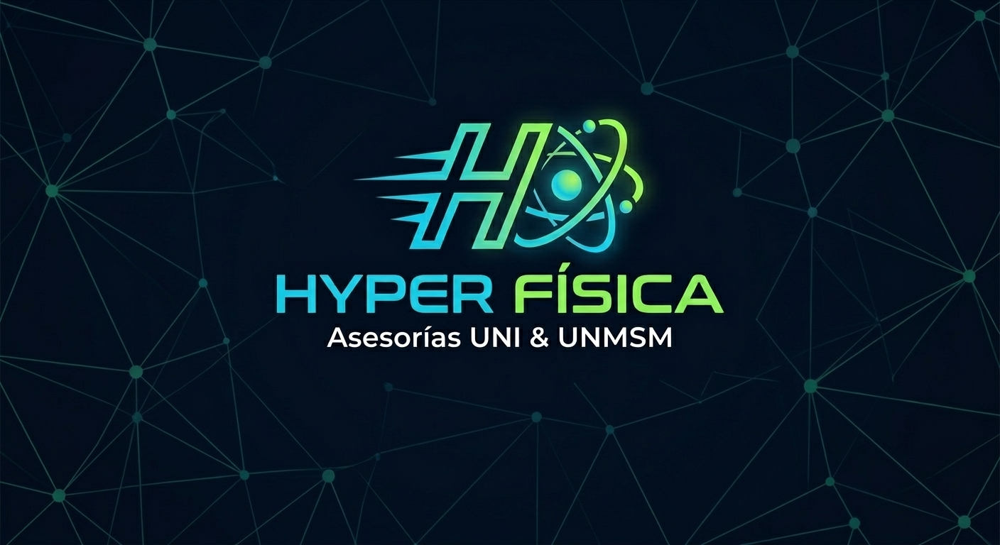

Domina los temas que las academias no llegan a dictar por falta de tiempo: Física Moderna, Electromagnetismo, Termodinámica y más.
Las academias suelen omitir el final del syllabus por falta de semanas. La OCAD-UNI sí toma esos temas.
Seminarios intensivos 100% enfocados en resolver ejercicios tipo examen de los temas críticos.
Efecto Fotoeléctrico, Rayos X y Dualidad Onda-Partícula.
Inducción Electromagnética (Ley de Faraday y Lenz) y Fuerza Magnética.
Procesos ideales, primera ley y ciclos térmicos.
Lentes, espejos, interferencia y difracción.
Ecuación de Bernoulli y aplicaciones con Arquímedes.
Aprovecha el precio de preventa por el pack completo de 5 seminarios en vivo vía Zoom + grabaciones + material en PDF.
🚀 Reservar mi cupo vía WhatsApp